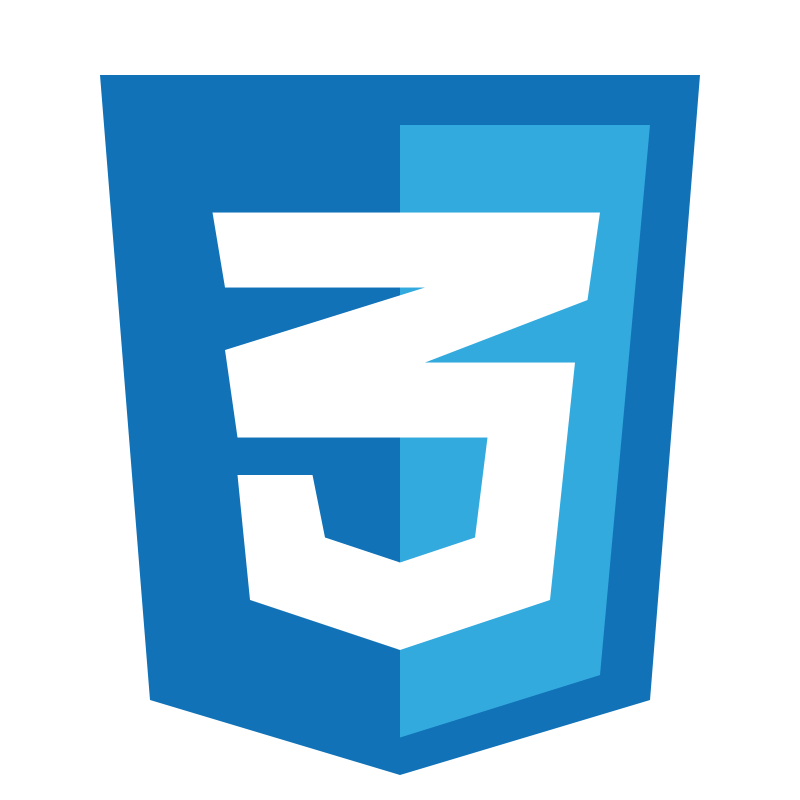

ToolboxPerkakas
What I build withAlat yang aku pakai untuk membangun
Languages I write most days, plus the platforms I've picked up more recently.Bahasa yang paling sering kupakai, ditambah platform yang baru-baru ini kupelajari.
Languages & frameworksBahasa & framework
HTML

Express
Platforms & toolsPlatform & alat

Supabasenewbaru
Convexnewbaru
AWSnewbaru

Roblox StudioRoblox Studionewbaru